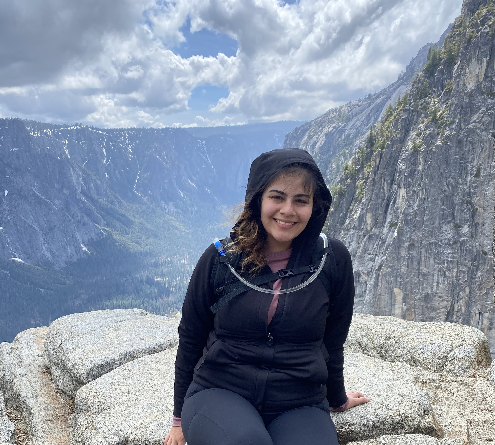

Welcome to my About page!
I currently have a:
M.S. in Bioinformatics - Boston University
B.S. in Biology | Minor in Computer Science - California State University Channel Islands
Beyond my educational qualifications, I'm motivated by finding meaningful insights from complex genetic data and making these findings accessible through computational tools.
In undergrad, I worked as a research assistant studying the effects of anthropogenic led environmental stressors on California mussels
such as extreme wave action, oxidation, rising temperatures, UV light exposure, and ingestion of microplastic adsorbing polycyclic aromatic hydrocarbons (PAHs).
As one would presume, marine research is admirable, and I often had the opportunity to conduct field work in tide pools of the beautiful Santa Rosa Island .
However, understanding marine life at a molecular and genetic level was what really shaped my passion for this field.
My primary focus as a molecular team member, was to measure physiological phenotypic responses through qRT-PCR
and transcriptomic methods.
Transitioning from analyzing ecological research to clinical omic-data bioinformatics involved learning new analysis techniques such as
Python, R, SQL, NoSQL. This website showcases the diverse projects I've
undertaken as a M.S. Bioinformatics student, as well as independently. Click the Projects tab to see more.
Overall, I’m fueled by my curiosity. I'm able to work flexibly within teams to meet their needs.
My goal is always to stay aligned with the team and meet goals and deadlines while contributing postively
to collaborative environments.
Extracurricular
- LRC Biostats and Biology Tutor
- CI Women in Tech
- LSAMP Proud Scholar
My Hobbies
- Spending time with family and friends
- Playing Pickleball
- Playing automation video games, my current favorite is Shapez!
- Listening to music
- and sometimes ... hiking

^^^ Here I am up 3,000 ft in elevation after a 6-hour long hike in the Upper Falls Trail in Yosemite.
The breathtaking and unforgettable views at the top made this challenge worth it!
.... and much less dangerous than half dome!